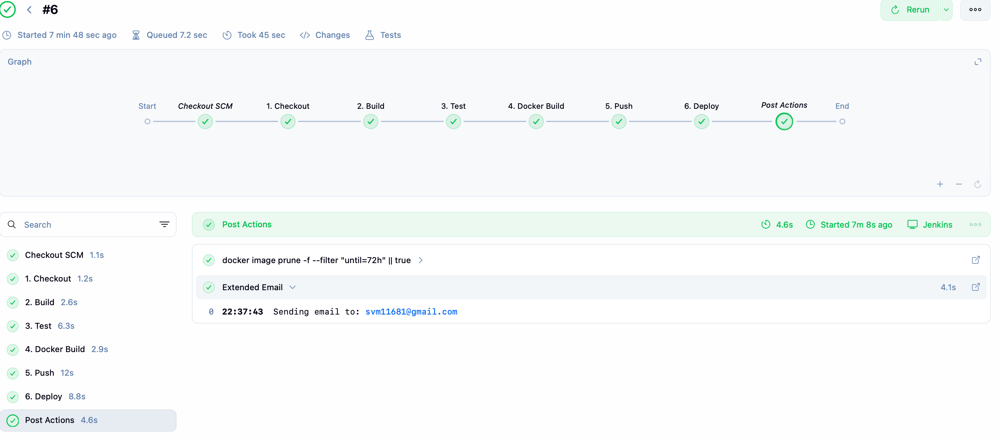
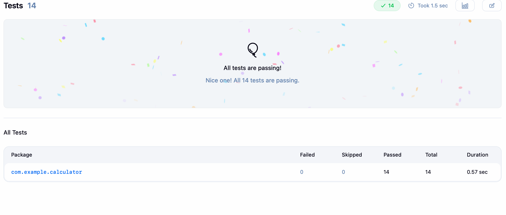
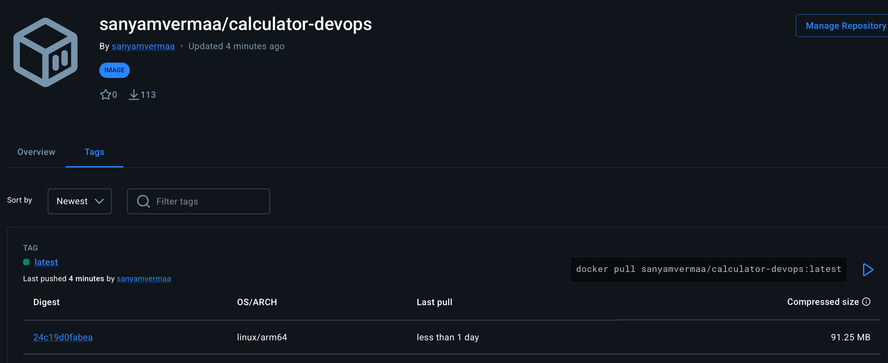
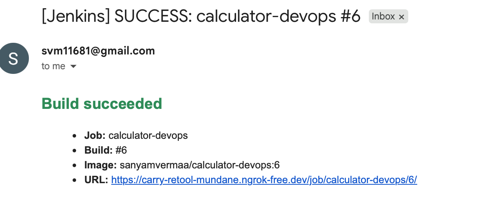
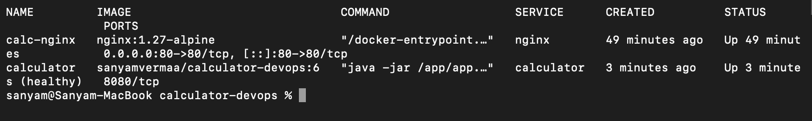
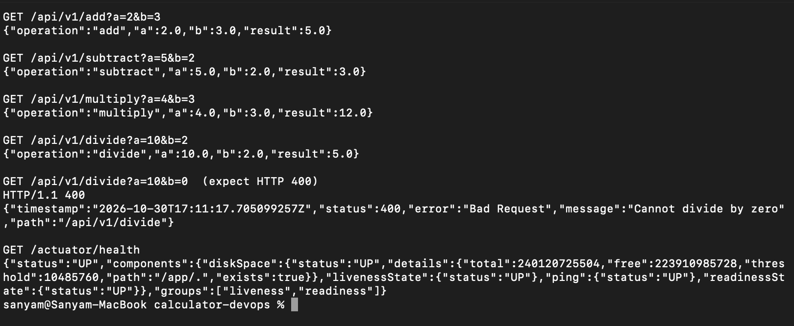

A Spring Boot REST calculator built, tested, containerised, published and deployed automatically on every push.
This project wraps a deliberately small application — a four-operation arithmetic REST API — in a
complete, working delivery pipeline. The application is simple on purpose, so the engineering effort
sits where the course places it: in the automation around the code rather than the code itself. A
single git push to main compiles the project, runs fourteen tests, builds a
container image, publishes it to Docker Hub under a unique build tag, rolls the running deployment
forward, verifies the new container is healthy, and emails the outcome.
The API exposes /api/v1/add, /api/v1/subtract,
/api/v1/multiply and /api/v1/divide, each taking a and
b as query parameters and returning
{"operation":"add","a":2.0,"b":3.0,"result":5.0}. Three failure modes return HTTP 400
with a structured body carrying a timestamp, status, reason phrase, message and request path:
division by zero, a missing parameter, and a non-numeric parameter. Spring Actuator supplies
/actuator/health, reused three times over — by the Compose health check, by the
depends_on gate holding nginx back until the API is ready, and by the pipeline's
deployment verification step.
calc-net.| Stage | What it runs | What it produces, and what makes it fail |
|---|---|---|
| 1 Checkout | checkout scm, git log -1 |
A clean workspace at the triggering commit; the log line records which commit produced the artefact. |
| 2 Build | ./mvnw clean package -DskipTests |
The fat JAR. Tests are skipped here so a compile error surfaces as a build failure, not buried in test output. |
| 3 Test | ./mvnw test, junit in post{always} |
14 tests plus Surefire XML for the trend graph. One red test ends the run — nothing is built, pushed or deployed. |
| 4 Docker Build | docker build -t $IMAGE:$BUILD_NUMBER -t $IMAGE:latest . |
One image, two tags: the build number is an immutable identity, latest the convenience pointer. |
| 5 Push | docker login --password-stdin in withCredentials |
Both tags on Docker Hub. The token is scoped to the block, masked in the console, and piped via stdin, never -p. |
| 6 Deploy | compose pull, up -d --remove-orphans, health poll |
The live stack moved to the new image. Fails if health does not report UP within two minutes. |
The pipeline is a declarative Jenkinsfile committed at the repository root, so the
automation is versioned alongside the code it builds. A GitHub webhook delivers the push event to
Jenkins through an ngrok tunnel, with Poll SCM on a hashed two-minute schedule as a
fallback. The evidence below is a single end-to-end run: the commit landed, every stage went green,
the image reached Docker Hub and the notification arrived — with no manual step in between.


target/surefire-reports/*.xml to produce this and the pass/fail trend.
:${BUILD_NUMBER} and a moving :latest.
post { success } block
via the Email Extension plugin, carrying the job, build number, image tag and a link to the console.The Deploy stage never calls docker compose down: tearing the stack down and back up
would create a visible outage on every build, including during the live demo. up -d
compares desired state against running state and recreates only the services whose image or definition
changed, so re-running an unchanged build is a no-op and an application-only change leaves nginx
untouched. --remove-orphans clears containers left by an older revision of the Compose
file, and because each build tags a distinct image, consecutive runs never contend over a shared
mutable tag.

docker compose ps: calculator reports
(healthy) because Actuator answers the container health check, and only
calc-nginx binds a host port.
ApiError body./actuator/health through the reverse proxyThe API worked through nginx, but curl http://localhost/actuator/health returned a
Tomcat 400 page — which would have failed the Deploy stage's verification on every build. When
proxy_pass targets a named upstream, nginx sends that name as the Host
header, and the upstream was called calc_backend; Tomcat treats an underscore in a
hostname as illegal and rejects the request before it reaches Spring. The /api/ block had
escaped the bug only because it overrode Host with $host. Fixed by renaming
the upstream to calc-backend and setting the forwarding headers in both blocks — caught
by testing the Compose stack locally before writing the Jenkinsfile.
Surefire's default includes are *Test.java, Test*.java and
*Tests.java. The MockMvc class follows the *IT.java convention, so
mvn test reported seven passing tests and a green build while executing none of the
integration suite — the worst kind of failure, because it looks like success. Resolved with an explicit
<includes> block covering both patterns; the count rising from 7 to 14 confirmed it.
A password in the Jenkinsfile fails the rubric and leaks the credential to anyone who clones the
repository. The credential is stored in the Jenkins credentials store under the ID
dockerhub-creds and bound by withCredentials, which scopes it to that block
and masks it in console output. It is a revocable access token, not the account password. Separately,
.gitignore excludes .env, *.pem and *.key, and was
committed on its own as the very first commit so no later git add could track
target/ or a secret by accident.
The first Deploy stage waited sleep 15 then curled the health endpoint. On a cold JVM
this intermittently fired early, failing a build whose artefact was perfectly good. Replaced with a
bounded retry loop — up to twenty-four attempts five seconds apart, succeeding the moment the response
contains "status":"UP". That turns a race into a deterministic check, and on genuine
failure it prints compose ps and the container logs before exiting non-zero.
The repository is structured so the end-of-semester capstone extends it rather than replaces it: provisioning the deployment host with Ansible instead of configuring it by hand; replacing the Compose stack with Kubernetes manifests to gain rolling updates, readiness gates and horizontal scaling from the same image and the same health endpoint; and adding Prometheus and Grafana against the Actuator metrics endpoint, so the pipeline reports not only that a deployment succeeded but how the deployed service then behaves. A rollback stage keyed on the previous build number is a small addition the existing per-build image tagging already makes possible.